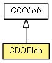

org.eclipse.emf.cdo.common.lob
Class CDOBlob
java.lang.Object
 org.eclipse.emf.cdo.common.lob.CDOLobInfo
org.eclipse.emf.cdo.common.lob.CDOLob<InputStream>
org.eclipse.emf.cdo.common.lob.CDOBlob
org.eclipse.emf.cdo.common.lob.CDOLobInfo
org.eclipse.emf.cdo.common.lob.CDOLob<InputStream>
org.eclipse.emf.cdo.common.lob.CDOBlob
- public final class CDOBlob
- extends CDOLob<InputStream>

A identifiable binary large object with streaming support.
- Since:
- 4.0
| Methods inherited from class org.eclipse.emf.cdo.common.lob.CDOLob |
getStore |
CDOBlob
public CDOBlob(InputStream contents)
throws IOException
- Throws:
IOException
CDOBlob
public CDOBlob(InputStream contents,
CDOLobStore store)
throws IOException
- Throws:
IOException
getContents
public InputStream getContents()
throws IOException
- Specified by:
getContents in class CDOLob<InputStream>
- Throws:
IOException
put
protected CDOLobInfo put(InputStream contents)
throws IOException
- Specified by:
put in class CDOLob<InputStream>
- Throws:
IOException
Copyright (c) 2011, 2012 Eike Stepper (Berlin, Germany) and others.